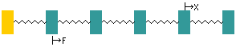
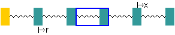
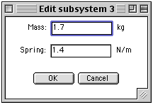

Instructions
This package allows you to investigate the forced vibration response of an axial five degree-of-freedom system.
 |
This indicates a rigid abutment. This is fixed to earth. |
|
This indicates a rigid mass and you will be able to change the size of the mass in kg. |
 |
This indicates a massless spring and you will be able to change its stiffness in N/m. |
 |
This indicates the excitation force position and you will be able to change its position by clicking above the desired mass. |
 |
This indicates the measured displacement position and you will be able to change its position by clicking below the desired mass. |
When the applet is loaded the system that is shown looks like,
 |
The response curve for this system is shown as a graph. As a first experiment use the mouse to move the X and F positions to see how the response changes. Click above or below a mass to do this.
The animation shown under the response is for the frequency shown by the blue line. This frequency can be changed by dragging the line.
|
Changing mass and stiffness values.
 |
First use the mouse to select a spring/mass by clicking on the mass/spring. |
Changing parameter values.
 |
When a spring/mass is selected the edit button will allow parameter values to be changed using a dialogue box. |
NOTE: Even though the excitation frequency is changed on the graph the frequency of the animation is constant for ease of viewing.